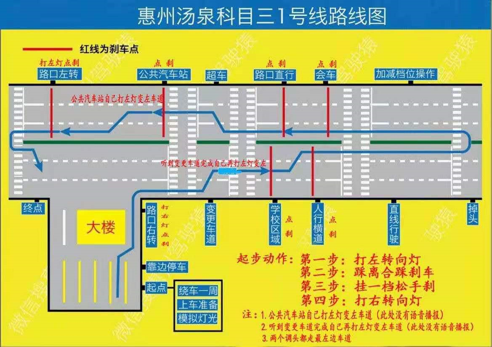
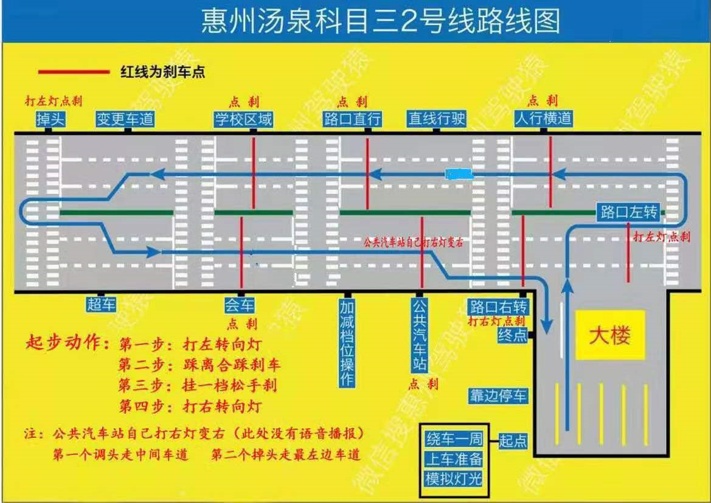
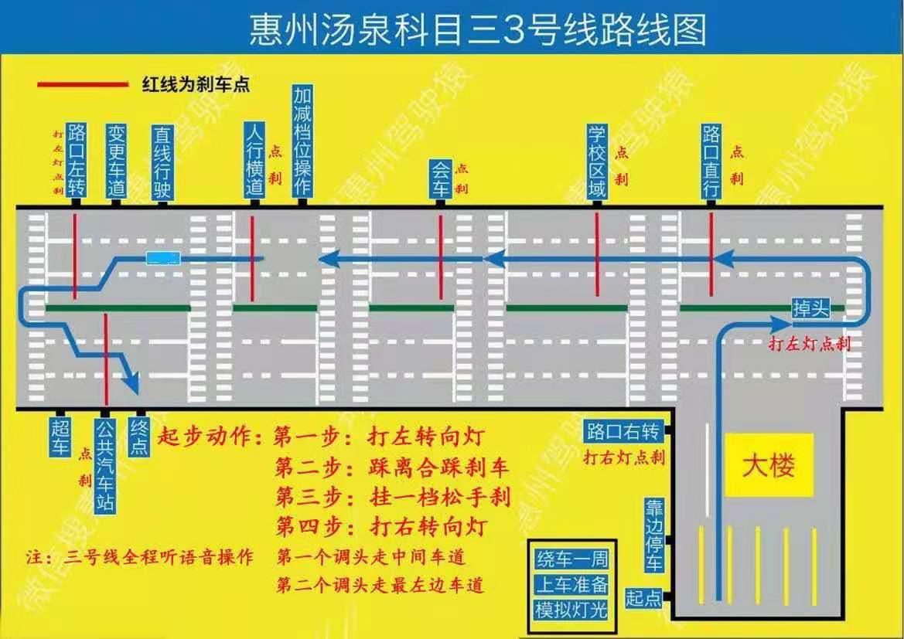

灯光

起步
第一次起步：打左灯（等3秒）、踩离合刹车、挂一档、拉手刹、看仪表盘门灯和手刹灯
打右灯（等3秒）、对准箭头、靠边停、空挡、拉手刹
第二次起步：打左灯（等3秒）、挂一档、拉手刹、看仪表盘门灯和手刹灯、方向盘左打90度，起步后迅速回正
路线
有4个没有语音，其中三个有路牌指示，除了加减档
不要打虚灯，每个转向灯闪够三秒以上才有效。
要打灯的先打灯，所有语音都需要点刹
掉头，左转，右转，在中间车道报的需要先变道然后进行补灯。
2、3号线第一个掉头走中间，其他所有掉头走最左边

1号线：
出去走最右边车道
有两个要自己要变更车道，变到最左边
- 学校区域后自己变道最左道
- 公交车牌后马上打左灯变左道
掉头均走最左边车道
第一次掉头后加减档
人行横道后直线行驶

2号线：
出去走最左边车道
第一次调头后，走中间车道
出路口要自己打灯点刹
有一个要自己变更车道边的，变右边，公交车牌后马上打右灯变右
会车后过斑马线进行加减档（超车返回过来的时候，前面没有车也可以换加减档）；
人行横道后直线行驶
超车后加减档位

3号线：
出去走最左边车道
第一次调头后，走中间车道
会车后过斑马线进行加减档；
路口左转，转最左边
公交车牌后马上打右灯变右道